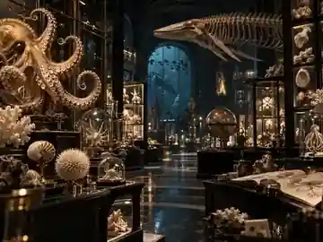

THE BUSINESS FIRST.
Educational platforms often reduce knowledge to lessons and points. Sophia d'Or needs to feel like entering a living museum where the user can discover, question, test and connect ideas.

BUILD 007 / SELECTED STUDIO BUILDA cinematic exploration and knowledge platform built around curiosity, evidence, uncertainty, discovery trails and real-world field quests.
IN DEVELOPMENT / STUDIO BUILDEducational platforms often reduce knowledge to lessons and points. Sophia d'Or needs to feel like entering a living museum where the user can discover, question, test and connect ideas.
Dark cinematic museum atmosphere, premium serif typography, ivory and restrained gold, with the subject matter itself providing the colour.
Discover / Understand / Go Deeper / Research Desk layers, evidence rooms, question trees, catalogues, personal cabinet, field quests and exploration modes.
Designed as an international knowledge product, with content architecture prepared for later localization without flattening scientific nuance.